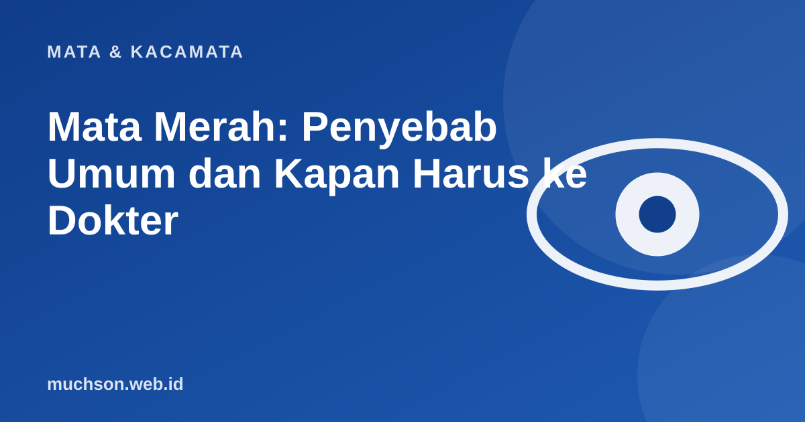

Beranda › Artikel › Mata & Kacamata
Mata & KacamataMata Merah: Penyebab Umum dan Kapan Harus ke Dokter
Mata merah sangat umum. Sebagian besar ringan dan sembuh sendiri, tetapi sebagian berkaitan dengan kondisi serius. Kuncinya adalah mengenali tanda yang menyertainya.

Penyebab yang sering ditemukan
| Penyebab | Ciri khas | Catatan |
|---|---|---|
| Mata kering atau iritasi | Perih, berpasir, memburuk saat menatap layar atau ber-AC | Membaik dengan istirahat dan kebiasaan yang baik |
| Alergi | Gatal, berair, kedua mata, kadang bersin | Hindari pemicu, jangan mengucek |
| Konjungtivitis virus | Berair, kotoran encer, sering menyebar ke mata lain | Menular, cuci tangan, tidak berbagi handuk |
| Konjungtivitis bakteri | Kotoran kental kekuningan | Perlu dinilai tenaga kesehatan |
| Perdarahan subkonjungtiva | Bercak merah terang di bagian putih mata, tanpa nyeri | Biasanya hilang sendiri, tetapi periksa bila berulang |
| Lensa kontak bermasalah | Nyeri, silau, buram | Lepas lensa dan periksa segera |
Perawatan awal yang aman
- Cuci tangan sebelum dan sesudah menyentuh area mata.
- Jangan mengucek mata.
- Lepas lensa kontak sampai mata sehat.
- Kompres dingin untuk alergi, kompres hangat untuk kelopak yang berkerak.
- Gunakan air mata buatan bila mata kering.
- Jangan berbagi handuk, bantal, atau kosmetik mata.
Hati-hati
Jangan memakai obat tetes mata sisa atau milik orang lain, dan hindari tetes yang mengandung steroid tanpa resep. Obat yang salah bisa memperburuk infeksi tertentu.
Tanda untuk segera ke dokter
Jangan tunda
Mata merah disertai nyeri hebat, penglihatan menurun, atau silau berat bukan hal ringan. Segera cari pertolongan medis.
Tanya jawab
Apakah mata merah selalu menular?
Tidak. Mata merah akibat alergi atau mata kering tidak menular. Konjungtivitis akibat virus atau bakteri bisa menular.
Bolehkah bekerja atau sekolah saat mata merah?
Bila diduga infeksi menular, sebaiknya istirahat dan menjaga kebersihan. Ikuti saran tenaga kesehatan.
Berapa lama mata merah ringan sembuh?
Iritasi ringan sering membaik dalam satu dua hari. Bila tidak membaik atau memburuk, periksakan.